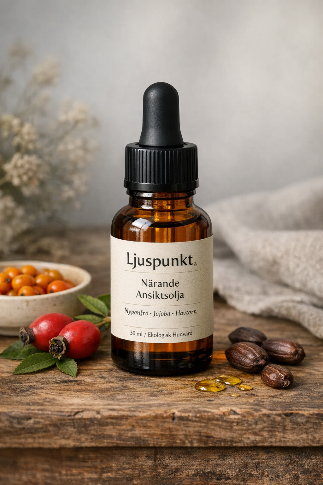
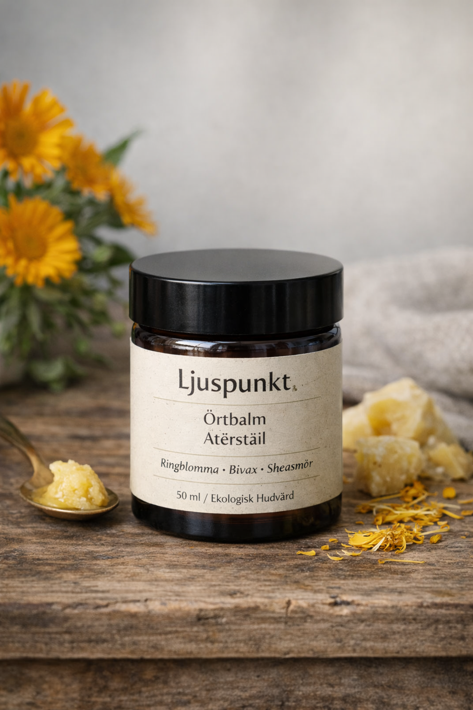
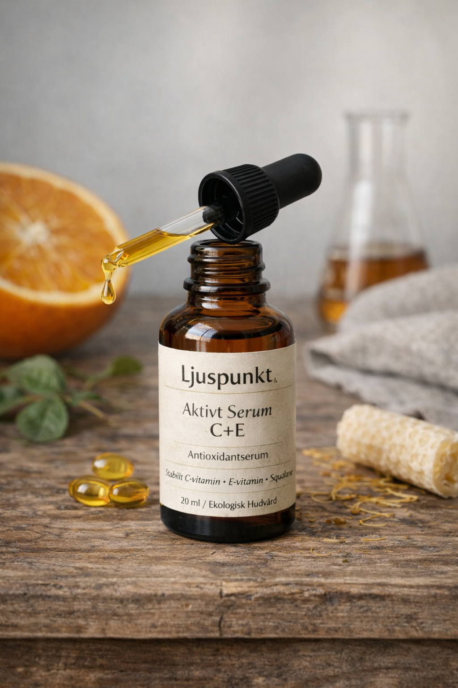
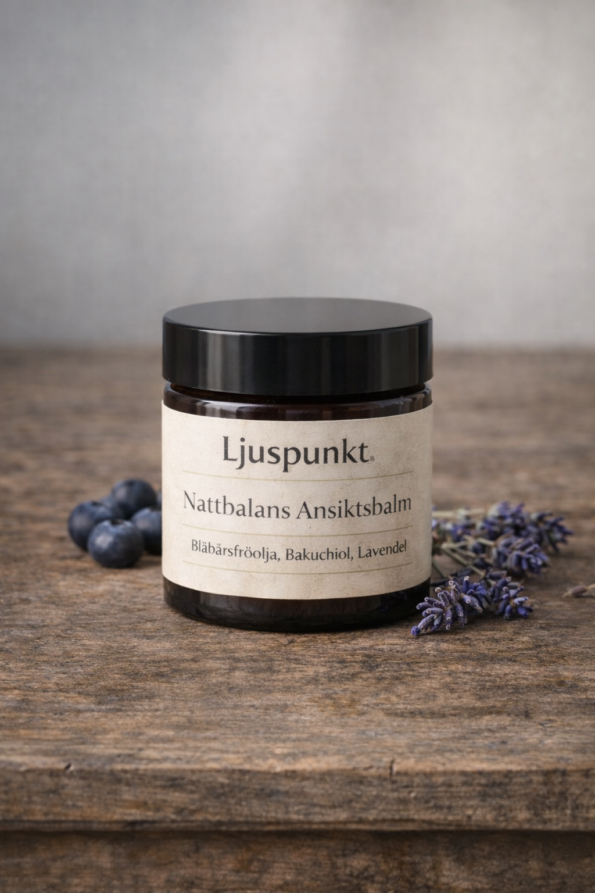
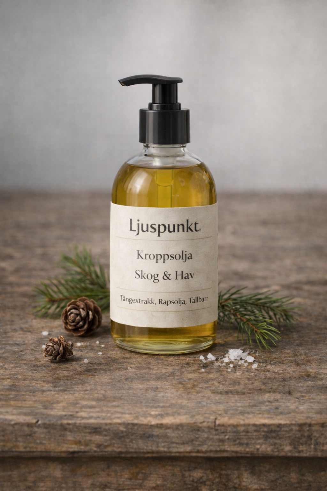

Våra produkter
Närande Ansiktsolja
En kallpressad ansiktsolja med nyponfrö, jojoba och havtorn som stärker hudbarriären och ger naturlig lyster. Passar alla hudtyper, särskilt torr och känslig hud.
349 kr
Läs Mer
Örtbalm Återställ
En rik balm med ringblomma, bivax och sheasmör som lugnar irriterad hud och skyddar mot yttre påfrestningar. Perfekt för torra partier, läppar och kinder.
299 kr
Läs Mer
Aktivt Serum
Ett vattenfritt antioxidantserum med stabiliserat C-vitamin, E-vitamin och squalane. Ger jämnare hudton och skyddar mot oxidativ stress.
399 kr
Läs Mer
Rengörande Oljekaka

En fast rengöring baserad på ekologiska oljor och lera som effektivt löser smuts och makeup utan att torka ut huden. Mild, men effektiv.
249 kr
Läs Mer
Nattbalans Ansiktsbalm
En reparerande nattbalm med blåbärsfröolja, bakuchiol och lavendel som stödjer hudens naturliga återhämtning under natten.
379 kr
Läs Mer
Skog Kroppsolja
En närande kroppsolja med tångextrakt, rapsolja och tallbarr som återfuktar på djupet och ger en subtil doft av svensk natur.
329 kr
Läs Mer